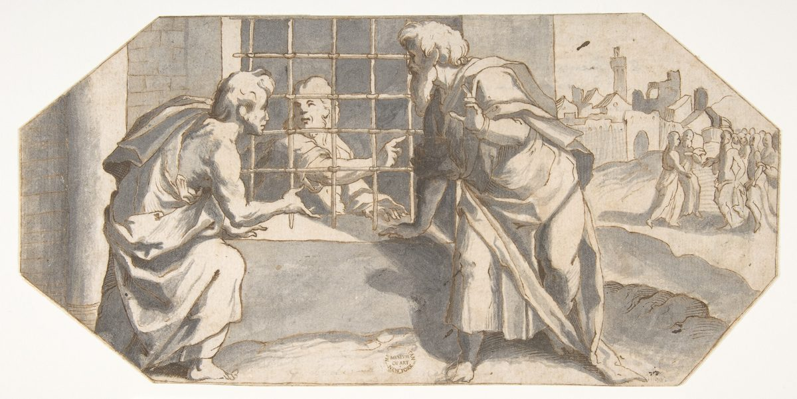

Mateo 11 — La Traducción Mister

Un dibujo de diseño a pluma y aguada más que una pintura terminada — el octágono alargado y de esquinas cortadas es la forma usada para un «sopraporta» o luneto decorativo en un interior italiano, no un cuadro independiente. ⚠ Escenifica el ENVÍO, no la llegada: de Juan solo se ven la mano y el rostro que dejan pasar los barrotes de hierro, indicando el camino a sus dos discípulos, mientras una fila de pequeñas figuras ya se dirige hacia la ciudad al fondo, donde encontrarán a aquel sobre quien han sido enviados a preguntar.
{kind=link}
Notas del traductor
⚠ Una palabra que Mateo no usa en ningún otro lugar. Cada otra vez que este Evangelio menciona la misma prisión de Juan usa la palabra ordinaria, phylakē (14:3, 10). Aquí, una sola vez, Mateo escoge desmōtērion —literalmente «el lugar de las cadenas»—, una palabra más dura, en el momento exacto en que la propia fe de Juan tambalea.
«Las obras DEL CRISTO». Es Mateo, narrando, quien usa el título —nadie en la escena lo ha dicho todavía en voz alta—.
⚠ La respuesta responde con el vocabulario de Isaías, sin fórmula de cita. «Los ciegos ven… los sordos oyen» sigue casi palabra por palabra a Isaías 35:5-6, y «a los pobres es anunciada la buena nueva» es el verbo mismo de Isaías 61:1. Jesús nunca dice «como está escrito»; simplemente enumera las obras, en el vocabulario de Isaías, y deja que Juan saque la conclusión.
Una pregunta que esta traducción no resuelve. ¿Por qué pregunta, desde la cárcel, el mismo que lo bautizó y lo llamó «el que viene después de mí» (3:11)? Las lecturas difieren: que la prisión quita certezas que un hombre libre puede permitirse; que Juan esperaba el hacha ya puesta a la raíz (3:10-12) y en cambio ve un sanador, todavía no un juez; o simplemente que la celda es donde la duda visita a todos, profetas incluidos. El texto registra la pregunta y la respuesta —no las razones de Juan.
Tres preguntas, la misma forma, tres respuestas distintas. Ni una caña (la planta ordinaria del Jordán, que se dobla con cada ráfaga —no Juan, cuyo mensaje jamás se movió por nadie—), ni un hombre de ropas suaves (la tela de la comodidad y de las cortes reales, lo opuesto del pelo de camello, 3:4), sino un profeta —y más que un profeta—, porque él no solo habló la profecía: fue también su TEMA (v10).
⚠ Una cita compuesta, y leída aquí en dirección distinta a su fuente. Las palabras son Malaquías 3:1 con una frase de Éxodo 23:20. El hebreo de Malaquías habla en PRIMERA persona —«he aquí yo envío mi mensajero, y él preparará el camino delante de MÍ»—, pero Mateo (como Marcos y Lucas) lee «delante de TU rostro… tu camino delante de ti» —SEGUNDA persona, aplicada a Jesús—, porque esa dirección viene de Éxodo 23:20, donde Dios envía un ángel «delante de TI», a Israel. La cita toma su FORMA de Éxodo y su CONTENIDO de Malaquías.
Ninguno mayor, y sin embargo el menor es mayor aún —una afirmación sobre ÉPOCAS, no sobre personas. Nadie nacido bajo el orden antiguo estuvo por encima de Juan —y el lugar más pequeño dentro del reino que él anunció aún lo supera, porque pertenece a lo que él solo pudo señalar.
⚠ Uno de los versículos más discutidos del Nuevo Testamento, y esta traducción no cierra el argumento. El verbo griego biazetai puede leerse en dos direcciones opuestas: en voz MEDIA, «el reino avanza con fuerza» —un impulso imparable, y los violentos serían sus entrantes decididos—; en voz PASIVA, «el reino padece violencia» —bajo asalto, y los violentos serían sus enemigos, arrebatándolo—. El paralelo de Lucas es claramente medio («todos se esfuerzan por entrar en él», Lucas 16:16), pero el contexto propio de Mateo —una generación que no baila ni se lamenta pase lo que pase, cuatro versículos después— lee más naturalmente como violencia HECHA AL reino. Esta traducción imprime la lectura pasiva y nombra el argumento contrario en vez de cerrarlo.
«Hasta Juan» —un gozne dicho en voz alta. «Todos los profetas y la ley profetizaron HASTA Juan» nombra, en boca de Jesús mismo, la división que esta traducción viene siguiendo desde 3:2: el orden antiguo de la promesa que se cierra, el nuevo que ya ha comenzado.
⚠ Una identificación ofrecida, no impuesta. «SI queréis recibirlo» deja la identificación de Juan con Elías condicionada al oyente. Descansa en la propia promesa final de Malaquías (3:23-24, numeración hebrea; 4:5-6 en español): «he aquí yo os envío el profeta Elías, antes que venga el día grande y terrible de Jehová» —y es la misma identificación que el vestido de Juan ya argumentaba en silencio (pelo de camello, 2 Reyes 1:8; véase 3:4).
Ninguna melodía les agrada. Un lamento fúnebre y una canción de bodas agotan los dos ánimos que un juego de plaza podía ofrecer, y esta generación rehusa bailar a cualquiera de los dos —lo cual es exactamente el punto de emparejar el ascetismo de Juan («que ni comía ni bebía») con el hábito opuesto del Hijo del Hombre («come y bebe»)—. A uno lo acusan de tener demonio por AYUNAR; al otro, de ser glotón por NO ayunar. Y «amigo de publicanos y de pecadores» repite, casi palabra por palabra, la misma acusación ya hecha sobre la mesa de Mateo dos capítulos atrás (9:11).
⚠ Una variante textual real, y los dos Evangelios ya no coinciden. El texto base de esta traducción lee «la sabiduría es justificada por sus OBRAS»; el texto mayoritario bizantino lee en cambio «por sus HIJOS» —armonizando a Mateo con el paralelo de Lucas, que lee «hijos» sin ninguna variante (Lucas 7:35)—. Según la lectura aquí seguida, Mateo y Lucas registran el MISMO proverbio con sustantivos genuinamente distintos: la sabiduría probada correcta por lo que HACE, o por la gente que PRODUCE.
El estándar es el extranjero, y condena al de casa. Tiro y Sidón eran, en la memoria del Antiguo Testamento, potencias paganas y ricas —el blanco de Amós y Ezequiel, no modelos de piedad—. Nombrarlas como ciudades que SE HABRÍAN arrepentido, y Sodoma como una que HABRÍA sobrevivido, es la inversión más aguda posible: los pueblos galileos que más vieron responden peor que los proverbios históricos del juicio.
⚠ La jactancia de un rey de Babilonia, vuelta sobre un pueblo de pescadores. «¿Serás levantada hasta el cielo? Hasta el Hades serás abatida» repite, casi línea por línea, la burla de Isaías contra el rey de Babilonia: «subiré sobre las alturas de las nubes… mas serás abatido hasta el Seol» (Isaías 14:13-15). La misma forma retórica se traslada de un tirano imperial a un pueblo del lago que jamás se llamó a sí mismo nada.
⚠ Un verbo que lleva su propio juego de palabras. Exomologoumai, «te alabo», es la traducción griega habitual del hebreo yadah/hodah, «alabar, dar gracias» —la raíz misma con que Lea nombró a su cuarto hijo: «esta vez ALABARÉ a Jehová» —Judá (Génesis 29:35)—. La oración de Jesús se abre sobre la misma palabra que una matriarca convirtió en nombre, generaciones antes de que ese nombre encabezara la línea que este mismo Evangelio traza hasta su propia genealogía.
⚠ Niños contra sabios, a propósito. Los «niños pequeños» se ponen directamente contra «los sabios y los entendidos» —precisamente los mejor equipados para entender son de quienes se esconde, y los que no tienen ningún equipo son quienes reciben—. El agrado del Padre (v26) es la razón dada, y nada más se ofrece.
⚠ Una afirmación que este Evangelio hace solo aquí. «Nadie conoce plenamente al Hijo, sino el Padre, ni al Padre conoce alguno plenamente, sino el Hijo» es una reciprocidad exclusiva de conocimiento entre Padre e Hijo que suena más a Juan que a los demás Evangélios sinópticos —tan notado que algunos lectores lo apodan «el rayo joaníco en un cielo sinóptico»—.
La invitación más suave del Evangelio, dirigida a los agotados. «Venid a mí, todos los que estáis trabajados y cargados» no tiene paralelo en ningún otro Evangelio —material propio solo de Mateo, ofrecido justo después de las palabras más duras del capítulo—.
⚠ «Manso» —la palabra idéntica, reclamada por quien primero la prometió. Praus es la MISMA palabra griega ya encontrada una vez: «dichosos los MANSOS, porque ellos heredarán la tierra» (Mateo 5:5). Allí nombraba una bienaventuranza a perseguir; aquí, seis capítulos después, Jesús la aplica a sí mismo —los únicos dos lugares de este Evangelio donde aparece la palabra—.
Un YUGO, no solo una carga. En el idioma rabínico de la época de Jesús, «el yugo de la Torá» era una manera estándar de hablar de un cuerpo de enseñanza asumido. «Tomad mi yugo y aprended de mí» habla, pues, en un vocabulario que la sabiduría judía ya tenía preparado.
Patrones que vale la pena recordar
Dónde esta traducción conserva las palabras exactas: «la prisión» para desmōtērion, con el sentido más duro de la palabra («la casa de las cadenas», usada en ningún otro lugar de este Evangelio) llevado en la nota; «de cierto os digo» sin cambio desde el capítulo 5; «el reino de los cielos» en plural, como en toda ocurrencia desde 3:2; y el doble «delante de tu rostro…delante de ti» de la cita compuesta, conservado entero.
Dónde va por su propio camino: la lectura PASIVA de biazetai en el v12 («el reino padece violencia») impresa como texto principal, con el paralelo de Lucas —claramente medio— nombrado como el argumento más fuerte en dirección contraria; y «sus OBRAS» conservado en el v19 aun donde discrepa de «sus hijos» en el paralelo de Lucas, en vez de armonizar los dos Evangelios.
Ecos pagados. El vestido de pelo de camello de Juan (3:4), una reivindicación silenciosa, se vuelve aquí una identificación explícita («él mismo es Elías», 11:14); la acusación «amigo de publicanos y de pecadores» (11:19), ya implícita sobre la mesa de Mateó dos capítulos atrás (9:11), se dice ahora en voz alta; y manso (5:5), una bienaventuranza prometida como recompensa, es ahora una virtud que Jesús reclama para sí mismo (11:29).
Ecos plantados. «El que ha de venir» (11:3) será gritado de vuelta, palabra por palabra, por las multitudes a las puertas de Jerusalén (21:9, todavía no en estas páginas); la identificación de Elías, ofrecida aquí condicionalmente, se repetirá más claramente todavía bajando de un monte (17:10-13, todavía no en estas páginas); y «todas las cosas me fueron entregadas por mi Padre» (11:27) es la primera reivindicación de autoridad universal de este Evangelio —no la última—. Responde, al final mismo del libro, «toda potestad me es dada» (28:18, todavía no en estas páginas), en lenguaje casi idéntico, treinta y un capítulos después.
Próxima entrega en este libro: capítulo 12 — espigas arrancadas en sábado, una mano seca sanada también en sábado, y la acusación de Beelzebú plantada en 9:34 y nombrada en 10:25, dicha por fin en voz alta.